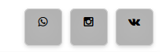

Социальные сети стали неотъемлемой частью современного интернета. Своим понятным функционалом они массово завлекли пользователей вызвав у них зависимость.
Хочу поделиться с достопочтенной аудиторий кнопками социальных сетей для сайта на чистом CSS и Font Awesome, которые я делал подгоняя стили целый день.
Кнопки социальных сетей
Набор круглых кнопок
Посидел денёк подбирая тени и стили для кнопок соцсетей. Теперь вот хочу поделиться с вами своим вариантом круглых кнопочек соцсетей:
Чтобы вставить кнопки на сайт, добавьте через HTML код нужных вам соцсетей.
Для тех кто плохо разбирается в HTML, подскажу что код одной кнопки соцсети состоит из трёх строк.
Начинается он с <div class... и заканчивается </div>
В классе открывающегося тега div есть названия соцсетей на английском. Ненужные кнопки можно удалить, а нужные отсортировать в том порядке который вас устраивает.
Надеюсь с вставкой HTML-кода кнопок разберётесь.
Ссылка на соц сеть
Теперь чтобы вставить ссылку на ваш профиль, канал или группу - нужно в атрибуте href вместо символа # вставить ссылку на вашу соцсеть. Будьте внимательны чтобы не удалить двойную кавычку, которая должна быть перед и в конце ссылки.
Так же обязательно добавьте CSS, чтобы ваши кнопки работали так же как в моём примере.
Код CSS
Первой строкой в данном css идёт подключение иконочного шрифта FontAwesome 4.7.0 через @import. Если FontAwesome уже подключен к вашему сайту, то удалите данную строку.
CSS кнопок добавляется в файл CSS темы или шаблона вашего сайта. Место для вставки кода CSS не принципиально. Можете вставлять код в самый низ файла css с новой строки.
Начиная со строки 15 идут стили для кнопок. Можете удалить ненужные вам соцсети.
Например:
Набор квадратных кнопок
Так же если вам не нравятся круглые кнопки, предложу вариант квадратных кнопок:
Для применения квадратных кнопок нужно всё тоже самое что и для круглых, только в CSS заменить в 10-строчке значение и вместо:
изменяем на:
Надеюсь вам понравится мой вариант и оформление кнопок для соцсетей. Ну а если у вас возникли трудности, то можете задавать свои вопросы ниже в комментариях.
Доброго времени суток! Все получилось, спасибо! Только значки отображаются без круглых кнопочек и не подсвечиваются цветом!:((
У вас наверное в стилях для тега
divзадано свойствоdisplay: blockПопробуйте добавить такой стиль:
или можно дивы заменить на спаны (для спанов как правило прописано
display: inline;). Получится для каждой из кнопок так:Все кнопки оберните дивом, чтобы проблем не было. Типо так:
Если не получится, киньте ссылку на сайт, я её потом затру чтобы не палить.
Добрый день. Я кнопки поместил в хидер, но они сместились к левому краю, сайт работает на ОпенКарт 2.3. Как их поместить вправо под корзину, тема дефолтная. Еще значки не совсем такие как у вас, получились рамки правильные а сами значки соцсетей маленькие и в правом верхнем углу внутри границ значков. Подскажите как решить эти вопросы?
Кнопки поместил, куда хотел, но внешний вид кнопок так и не изменил.
Что то в стилях переопределяется, подхватывая свойства из вашей темы. Можете оставить ссылку на сайт? (я ссылку затру чтоб не палить сайт)
Дело в том, что я испытываю на локальном, а потом переношу на основной сайт.

Я понял что свойство
font-sizeне отрабатывает. Если бы увидеть сайт в живую, я бы смог найти в консоле что мешает размеру иконочного шрифта. А так я не вижу и только на угад.Попробуйте в стили добавить ещё вот такое:
Если не сработает, то попробуйте так:
По идее это должно сработать.
Если сработает, попробуйте удалить
!important. Если без него тоже сработает, то лучше без него оставляйте.!importantпринудительно заставляет исполнять свойство.встали ровно, но значки маленькие
А в браузере стили не кешируются?
Блин, ну я даже не знаю как помочь. В живую в консоле пройти по дом-дереву - видно что к чему и из за чего. Может попробуете на основном сайте где то на отдельной странице добавить эти кнопки, пусть не в шапке а в любом другом месте так чтобы это не мешало работе сайта и дать ссылку.
Если бы я увидел, я бы вам помог. А так наугад - это можно бесконечно перебирать варианты.
Добрый день. У меня иконки не отображаются. На их месте квадратики.
У вас не подключен иконочный шрифт Font Awesome.
Можно так внутри секции
<head>подключить с CDN:А где кнопка Viber???
В FontAwesome 4.7.0 нет иконки для Viber, поэтому не вошла такая кнопка.
В FontSwesome 5 добавили иконку Viber, но я от него отказался и не пользуюсь им. По моему он очень сильно раздут.
Сейчас попробую сделать кнопку для Viber где иконкой вставить svg. Я вообще давно уже думал убрать из этих кнопок FontAwesome и сделать всё через svg.
Вставил в конце обоих примеров кнопок новую кнопку Viber. Вроде всё норм. Вот HTML:
И вот такой css добавить:
просто изумительно, можно настроить всё ... самое основное поддерживается em как единица размера, (необходимо для макетов Dynamically Expandable Elastic html страниц )
Добрый вечер! Не подскажите как разместить кнопки с правой стороны страницы. Пробовала align, не работает( Да и размер как изменить?
Попробуйте заменить
на
Спасибо, все получилось)
можете помочь, видео не воспроизводится в Chrome
Вот пример вставки видео формата mp4
Можно в одну строку, я же каждый атрибут с новой строки сделал, чтоб наглядно было.
src- ссылка на видеоwidthиheight- ширина и высота видеоплеераposter- ссылка на изображение, которое будет заставкой видео (можно без него)Вот тут https://v3c.ru/sajtostroenie/video-placeholder внизу записи пример где вставлено это видео.
Спасибо)
В мобильном браузере никаких кружочков нет, тупо иконки.
А что за браузер? Вот поддержка браузерами свойства
border-radiushttps://caniuse.com/#feat=border-radiusЕсли вообще бордера нет, то посмотрите поддержку браузерами свойства
borderhttps://caniuse.com/#feat=mdn-css_properties_borderЯ вот проверил у себя на нескольких браузерах - у меня всё норм. У вас наверное устаревший браузер стоит.
Кто знает как сделать буквы в значке меньше. И еще как значки поставить в правый нижний угол
Уменьшить иконки в кнопке можно добавив в css такой стиль:
Как поставить в правый нижний угол - это нужно в код темы (шаблона) добавлять или как там у вас сайт сделан.
А как можно немного ниже опустить эти иконки? просто в подвале они стоят как то высоко и переходят линию подвала, Мне срочно нужен ответ, пожалуйста админ!
Нужно смотреть на сайт как вы вставили. Дайте ссылку я её потом затру.
Я её только создаю ещё даже выложил, вообщем, я поставил иконки на правую нижнюю сторону подвала, и немного переходят линию подвала сайта, и чуточку нужно опустить иконки, вот и спраиваю как это можно сделать
Вам нужно обернуть все кнопки тегом див и задать отступ сверху.
Исправьте код HTML так:
И в css добавьте:
если мало отступа, можете цифру 30 увеличивать или уменьшать если отступ большой.
Спасибо! Понял!
Если изменений не видно, возможно файл CSS закешировался в браузере. Нужно будет почистить кеш вашего браузера.
Понятно, вроде всё работает! Изменения есть! Спасибо!
Добрый день! Помогите, пожалуйста, с кодом соцсетей. У нас есть свои иконки. Font Awesome нет. Есть ли ошибки?
Я ваш код удалю из комментария.
Посмотрите вот тут генератор кнопок соцсетей на svg без всяких иконочных шрифтов и изображений: https://v3c.ru/instrumenty/gs-button
Здравствуйте! Большое спасибо за вашу работу! Как можно добавить иконки новых соц. сетей - подозреваю, что их нет FongAwesom 4.7 ? Яндекс Дзен Рутуб
Здравствуйте! У меня такая проблема что я вроде и добавил иконку но ее нету. Просто белый круг, как фиксится?
*** Авторизируйтесь чтобы писать комментарии.